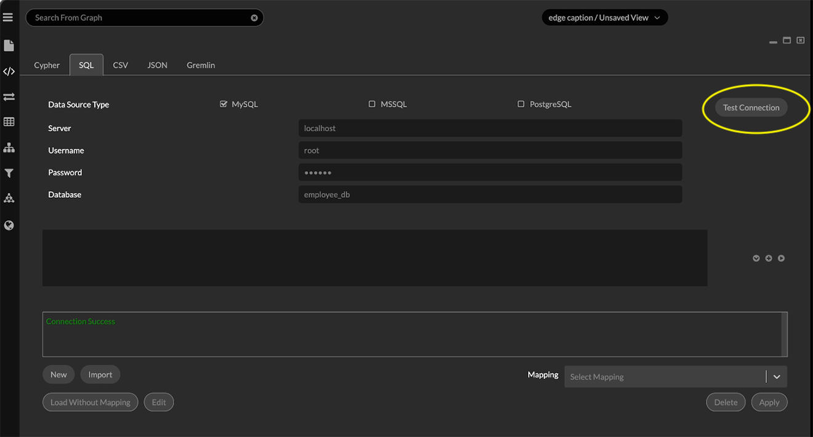
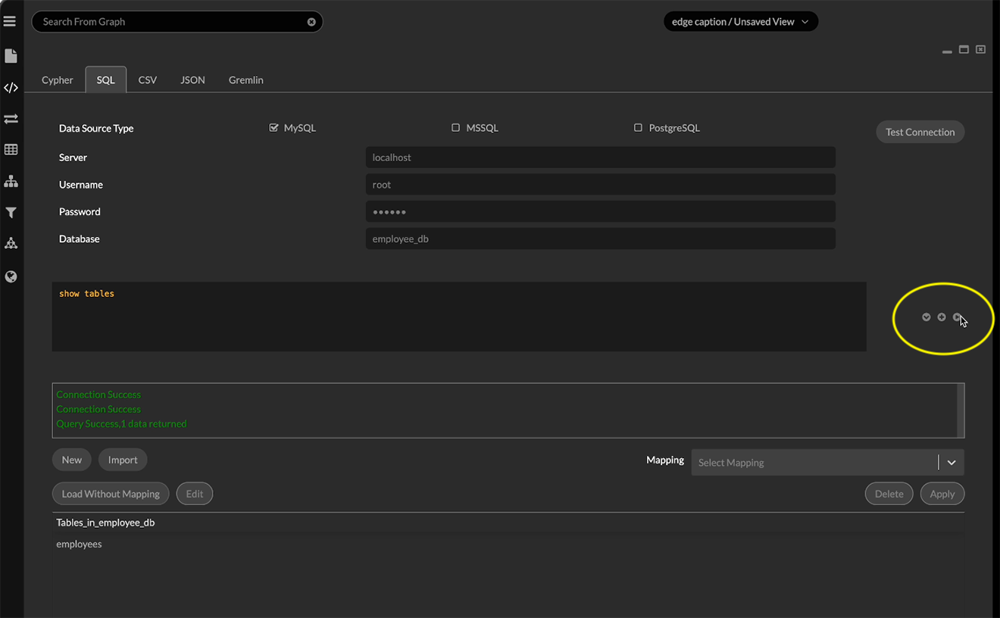
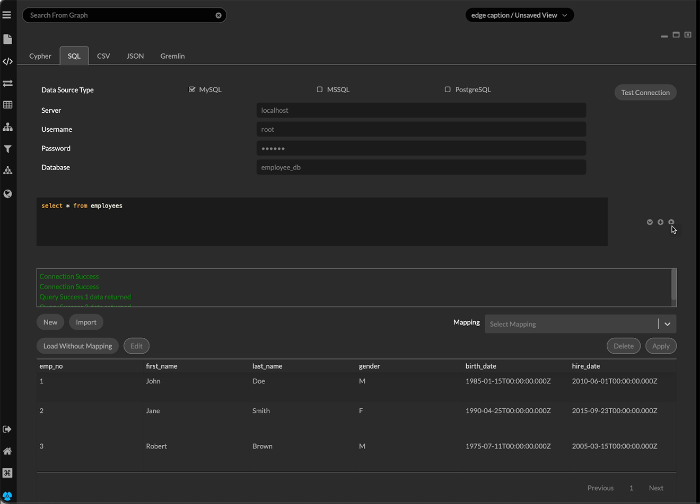
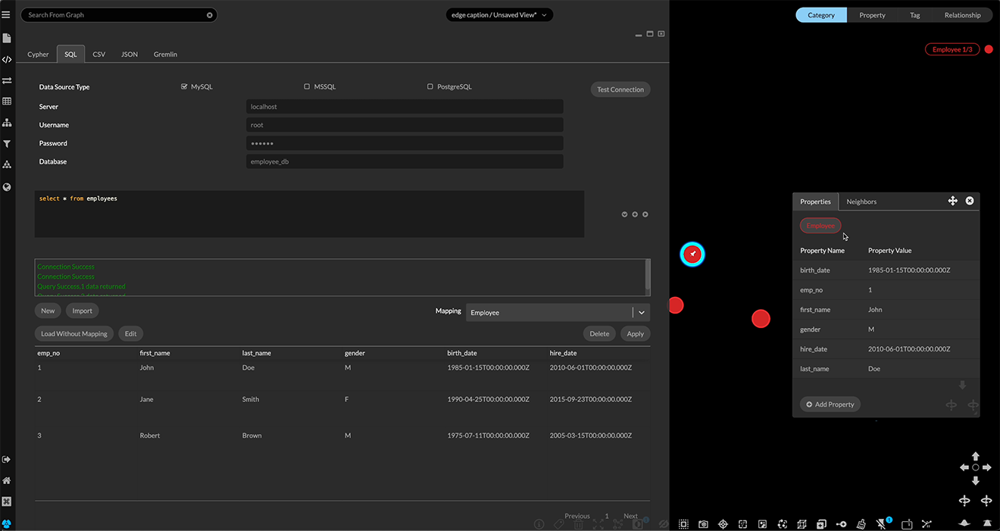

Import SQL Query Results SQL refers to a variety of structured query languages that can return data from relational databases (RDBMS). The Query panel and SQL tab enables you to run SQL queries and model the results as graph data. You can: Connect to a database through MySQL, MSSQL, or PostgreSQL and run a valid query. Save queries for re-use in the project. Load the table of results to the graph, either without further modeling, or by applying a mapping, just as you would a CSV file. Query results can only be loaded to the graph if they are returned as a table of values with column headings. Not all SQL queries return such results. To run a SQL query and import the results: Click the Query panel icon and SQL tab. Enter connection details: Click one of the checkboxes to choose the query environment: MySQL, MSSQL, or PostgreSQL. Enter the Server, UserName, Password, and Database name. Click Test Connection. A message indicates that the connection has been established, or indicates a problem.  As long as the SQL query panel remains open, multiple queries can be run without re-entering connection details or re-testing the connection. Once the database connection is established, enter a query and click the Run arrow. For example, you can enter SHOW TABLES to see a list of the tables in the database.  Enter a suitable query. In the example below, we’ll simply return all the values in one of the database tables. The results appears below the query window.  Optionally, click the + icon to save the query. You can now either: Click Load Without Mapping. This creates a single category (e.g. employees), with a node for each row of the table and properties created from the column headings. Select a Mapping from the dropdown menu and click Apply. A mapping is essentially a graph schema that defines columns in a table as categories, properties, and key values, and defines connecting relationships. When applied, nodes and edges in the specified graph pattern, and with the specified properties are created and loaded to the project.  Use the Mapping Editor to create a New mapping or Edit an existing one. You can also import a mapping saved from another project.